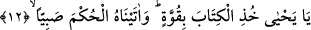

12. “Ey Yahya, Kitab’ı kuvvetle tut” (dedik) ve ona çocuk iken hikmet verdik.
Biz ona Yahya’yı verdik. Ve ona: “Ey Yahya” dedik. Kâşifî şöyle der: “Üç gün
böylece geçti. Yani Zekeriyya (a.s.) üç gün hiç kimse ile kelam etmedi, onlarla işâret
yoluyla konuştu. Daha sonra Zekeriyya (a.s.) kendine geldi ve insanlarla konuşmaya
başladı. Hâmilelik zamanı geçince Yahya (a.s.) doğdu. O, çocukluğunda aba giyerdi,
riyazet yoluyla yahudi âlimleri ile birlikte ibadet ederdi. Bu, ona vahiy gelene kadar ve
‘Ey Yahyâ…’ hitabı erişene kadar sürdü.
“Kitab’ı” yani Tevrat’ı “kuvvetle tut” Yani ciddiyet, başarı ve destek ızhar ederek
sımsıkı sarıl dedik. Celâleyn’de şöyle der: “Sana o kitabı, onu koruyacak ve
içindekilerle amel edecek gücü verdim.” Molla Câmî Fusûs Şerhi’nde şöyle der: “Eğer
Allah, Zekeriyya (a.s.) ve hanımına gaybî, rabbanî ve alışılmışın dışında bir kuvvetle
yardım etmeseydi, karısı doğum için elverişli hale gelemez ve hâmile kalması da kolay
olmazdı. Sonra bu kuvvet Allah’tan Zekeriyya (a.s.) ve hanımına, onlardan da Yahya
(a.s.)’ a geçmiştir. Bundan dolayı Allah Yahya (a.s.)’a: ‘Ey Yahya Kitab’ı kuvvetle tut’
buyurmuştur.”
el-Es’iletü’l-mukhime’de der ki: “Bu âyette Mûtezile aleyhine hangi delil vardır?”
sorusuna cevap şudur: “Bu âyet isimle müsemmânın/adlandırılanın aynı olduğuna
delildir. Çünkü Allah Teâlâ önce ‘ismi Yahya’dır’ buyurdu, sonra da aynı şahsı ‘Ey
Yahya!’ diye çağırdı.”
“Ve ona çocuk iken hikmet verdik.” İbn Abbas der ki: Buradaki hikmetten maksad
peygamberliktir. Yani Allah, Hz. Yahya’yı daha üç veya yedi yaşında iken peygamber
olarak seçmiştir. Burada peygamberliğe “hikmet” denilmiştir. Çünkü Allah, Yahya
(a.s.)’ ın aklını daha çocukken sağlam kılmış ve ona vahyetmiştir.
“Hüküm”, hikmet, Tevrat’ı anlamak ve dinde derin anlayış sahibi olmak ve engel
olmak anlamına geldiği söylenmiştir. Nitekim hâkim ismi de buradan gelmektedir.
Çünkü o zâlimi zulmünden alıkoyar. Hikmet ise kişiyi sefihlikten alıkoyar.
Rivayete göre çocuklar Hz. Yahya’yı oyuna çağırdılar. O da “Oyun oynamak için
yaratılmadık” dedi. Kâşifî şöyle der: “Bu sözde büyük bir nasihat vardır. Dünyada
gâfiller, aziz ömürlerini oyun ve eğlence ile geçirdiklerinden habersizdirler. “Dünya
hayatı oyun ve eğlencedir.” (Muhammed, 47/36) buyrulduğu üzere onlar hileci
dünyanın tuzağına düşmüşlerdir.
Boş boş geçiriyorsun oyuncak ile ömrünü
Git gide artırıyorsun oyuncak ile oyunu
Ayak çekesin cihanın oyunundan artık
Çocuk değilsin ne vakte dek hoş olacaksın oyun ile artık